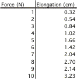
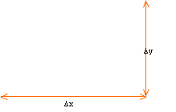
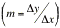

Inevitably, students always ponder why data taken from a lab doesn't give us a simple formula relationship. Why can't we just plug the raw data into an equation and get a single value for the slope. This is why we draw a picture (graph) the data. We can then perform a simple form of "best fit" of the data. It is the first step to understanding more sophisticated ways to analyze the information.
Let's look at the examples in once again but with a little more noise in the data itself:
|  |  |
If all we do is calculate the slope of this line from any chosen pair of points then we get values all over the map. By charting or graphing the data we can "average" out the noise and see that there is clearly a linear relationship between elongation and applied force.
To get the functional form we must take the slope from the line we generate as a "best fit" through the data. The general form is y = mx + b where b is the intercept and is 0 (or should be) in this case.When we do this we get a slope  of 0.3 cm/N.
There is a numerical way to provide this same answer provded you are sure that you have the correct "functional" relationship. Most of you have calculators that do "regression" or "least squares" type analysis. In order for you to use these functions, however, you have to know, in advance, what is the correct form. You have to graph the data first.
Calculators that can graph values can perform this analysis would work just fine.
Generally you enter the independent and dependant values into a table that looks much like a spreadsheet. Once you have done this a simple touch of a button displays a graph on the screen. When you have visually verified that the form of the relationship is linear (or quadratic or something else) you can then perform the analysis. Check out the information on the skills page of the web site to look up the particular technique for your calculator.